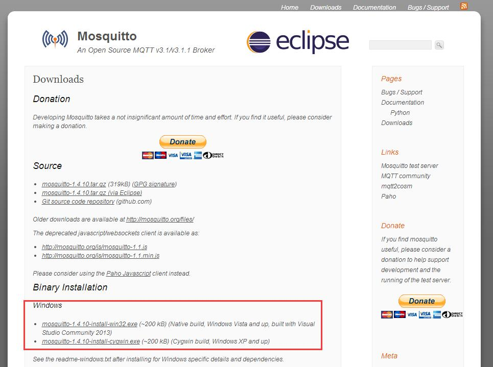
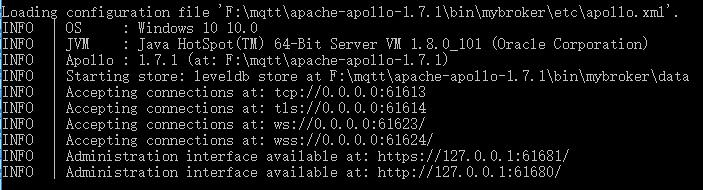
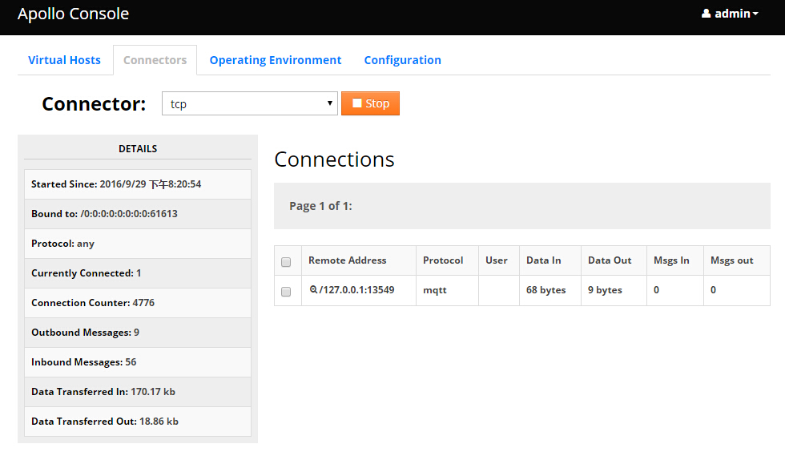

前言
最近在项目中要使用MQTT协议，需要搭建一个MQTT服务器来进行调试，在网络上找了一天，找到的大多数都是MQTT客户端，最后发现这篇博客写的教程可以使用，特此记录。
寻找过程
在寻找MQTT服务器的过程中，我发现的Mosquitto是一款「An Open Source MQTT v3.1/v3.1.1 Broker」——开源的MQTT代理服务器，其下也有Windows的安装包。

但是我使用的是Win10 64位系统，这两个都下载安装后不是报错就是缺少dll文件，不能使用。
最后参考了前面博客说的，搭建了Apollo服务器，这里使用的Apollo 1.7.1。
官网：http://activemq.apache.org/index.html
下载地址：http://activemq.apache.org/apollo/download.html
快速开始教程：http://activemq.apache.org/apollo/documentation/getting-started.html
搭建MQTT服务器
使用Apollo搭建MQTT服务器步骤：
下载Apollo服务器并解压，在CMD环境运行其工作目录下的…\bin\apollo.cmd，命令后面带上参数create mybroker，创建服务器实例。这里需要Java环境，系统环境变量下要有JAVA_HOME。
创建实例之后会在bin目录下生成mybroker文件夹，其中…\etc\apollo.xml文件下是配置服务器信息的文件，…\etc\users.properties 文件包含连接MQTT服务器时用到的用户名和密码，初始默认帐号是admin，密码password；
进入…\mybroker\bin 目录，在CMD输入命令apollo-broker.cmd run，可以使用TAB键自动补全，运行后输出信息如下：

其中我们要留意的：
MQTT服务器TCP连接端口：tcp://0.0.0.0:61613
后台Web管理页面：https://127.0.0.1:61681/或http://127.0.0.1:61680/
登录服务器后，如果MQTT服务器有客户端连接，后台会显示如下

Python的MQTT客户端
在Python环境下有MQTT客户端包——paho-mqtt。
安装命令
1 | pip install paho-mqtt1 |
客户端代码清单
下面是MQTT客户端代码清单1
2
3
4
5
6
7
8
9
10
11
12
13
14
15
16
17
18
19import paho.mqtt.client as mqtt
def on_connect(client, userdata, flags, rc):
print("Connected with result code "+str(rc))
client.subscribe("lettuce")
def on_message(client, userdata, msg):
print(msg.topic+" "+str(msg.payload))
client = mqtt.Client()
client.username_pw_set("admin", "password") # 必须设置，否则会返回「Connected with result code 4」
client.on_connect = on_connect
client.on_message = on_message
HOST = "127.0.0.1"
client.connect(HOST, 61613, 60)
client.loop_forever()
发布消息代码
下面是往MQTT服务器发布消息的代码1
2
3
4
5
6import paho.mqtt.publish as publish
HOST = "127.0.0.1"
publish.single("lettuce", "payload", hostname=HOST, port=61613,
auth={'username': "admin", 'password':"password"}